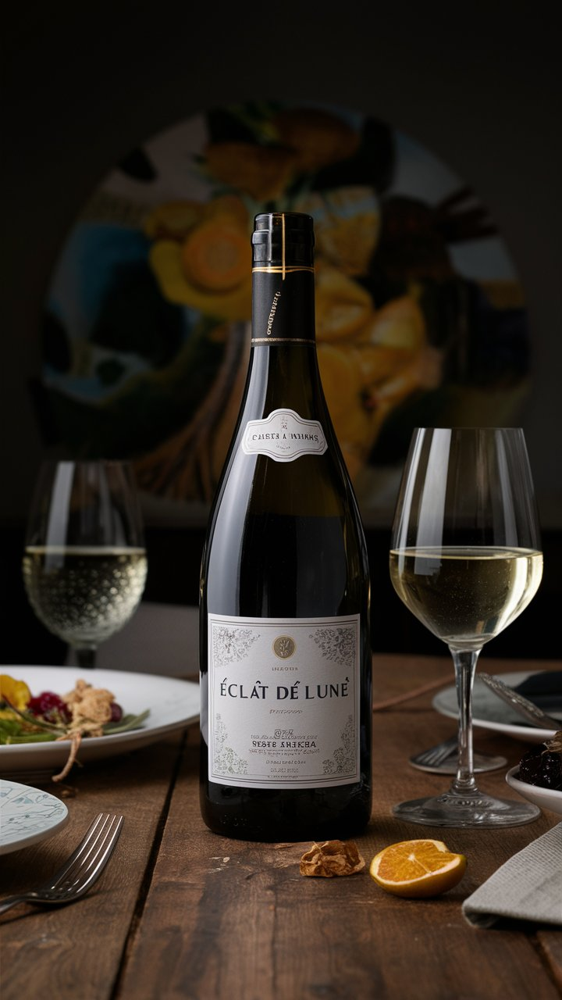

CARTA DE VINHOS

O vinho chileno “Aura del Sol” é uma expressão encantadora da região vinícola do Vale Central. Combinando uvas cuidadosamente selecionadas, este vinho tinto revela notas intensas de frutas vermelhas maduras e sutis nuances de especiarias. Sua textura suave e final persistente tornam-no uma escolha excepcional para acompanhar pratos gourmet em nosso restaurante."
O vinho "Éclat de Lune" é uma expressão encantadora da região vinícola francesa. Este vinho branco revela uma palete de sabores frescos e frutados, com notas sutis de flores brancas e frutas cítricas. Sua textura é refinada e equilibrada, ideal para acompanhar pratos delicados e refinados. "Éclat de Lune" é a escolha perfeita para momentos especiais e refeições elegantes.

O vinho “Riserva d'Oro” é um vinho italiano de prestígio, conhecido por sua riqueza e complexidade. Produzido nas colinas ensolaradas da região da Toscana, este vinho tinto exibe um caráter encorpado com notas marcantes de frutas escuras, especiarias sutis e um toque de baunilha. Sua cor profunda e aroma sedutor prenunciam uma experiência sensorial única, ideal para acompanhar pratos refinados e momentos especiais."

Este vinho é conhecido por sua rica história e perfil de sabor único, sendo um favorito entre os entusiastas do vinho. Estou especialmente interessado em saber sobre sua cor, aroma, sabor e quaisquer características notáveis que o diferenciem

xperimente o encanto do Chile com o vinho Fuego Estelár, uma expressão vibrante da região do Vale Central. Este vinho tinto seduz com seus aromas intensos de frutas vermelhas maduras, como cerejas e amoras, complementados por sutis notas de especiarias. Na boca, é macio e equilibrado, com taninos suaves que levam a um final persistente e agradável. Ideal para acompanhar uma variedade de pratos, desde carnes grelhadas até massas e queijos suaves. Desfrute do sabor cativante deste vinho chileno e deixe-se levar pelas estrelas desta terra distante.